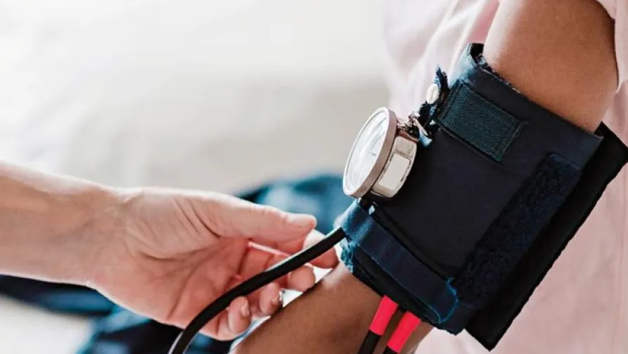

Strengthening Maternal
& Child Health
For over 23 years, our immunisation programme has supported communities across 82 villages in the Phagi block. In FY 2025–26, a mobile healthcare unit operating 20–22 days each month helped provide essential vaccinations to 1,895 children and maternal vaccinations to 2,886 pregnant women, in collaboration with government health authorities.
- 0 Villages
- 0 Years
-
0
Children
immunised -
0
Pregnant women
supported